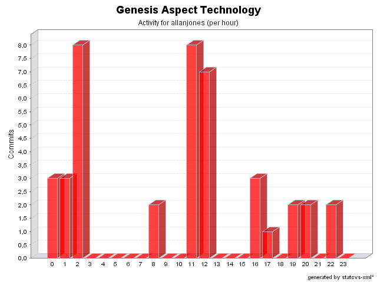

|
|
Login: allanjones
Fullname: allanjones
Revisions: 41
Lines of Code: 362
Added Lines of Code: 1076
Lines of Code per Change: 8,8
|

| Date | Author | File/Message |
|---|---|---|
| 11/12/04 11:48 | allanjones |
Issue #76. Criteria didn't work in local execution environment. Added a new parameter to CriteriaCommandExecutionAspect called 'useOriginalMethod'. In a local execution environment it's need to call the original method, not the wrapped method.
e.g.:
<aspect class="CriteriaCommandExecutionAspect">
<param name="useOriginalMethod" value="true" />
</aspect>
(1 Files changed,
11 Lines changed)
src/net/java/dev/genesis/aspect/CriteriaCommandExecutionAspect.java 1.7
(+11
-5)
|
| 11/12/04 11:28 | allanjones |
Issue #127. Upgraded to AspectWerkz 1.1
(2 Files changed,
0 Lines changed)
src/net/java/dev/genesis/aspect/FormMetadataFactoryAspect.java 1.15
(+0
-4)
src/net/java/dev/genesis/aspect/ThinletMetadataFactoryAspect.java 1.5
(+0
-5)
|
| 09/12/04 00:09 | allanjones |
Removed unused imports.
(1 Files changed,
0 Lines changed)
src/net/java/dev/genesis/aspect/LocalEJBCommandExecutionAspect.java 1.4
(+0
-2)
|
| 09/12/04 00:09 | allanjones |
Removed unused variable.
(1 Files changed,
0 Lines changed)
src/net/java/dev/genesis/aspect/HibernateTransactionalInjector.java 1.3
(+0
-2)
|
| 09/12/04 00:08 | allanjones |
Remove unused import.
(1 Files changed,
0 Lines changed)
src/net/java/dev/genesis/aspect/CriteriaCommandExecutionAspect.java 1.6
(+0
-1)
|
| 07/11/04 19:44 | allanjones |
Issue #46.
Annotations renamed.
@PreAction -> @BeforeAction
@PosAction -> @AfterAction
(2 Files changed,
6 Lines changed)
src/net/java/dev/genesis/aspect/ThinletMetadataFactoryAspect.java 1.3
(+4
-4)
src/annotation.properties 1.8
(+2
-2)
|
| 22/10/04 16:59 | allanjones |
Issue#46. We can´t rename to BeforeAction or AfterAction due to AspectWerkz annotations.
An exception occurs if we annotated some method with an annotation starting with 'Before' or 'After'. PostAction (wrong english) was renamed to PosAction.
We assume the action name is the method name, unless we specified another name.
e.g:
/**
* @PreAction
*/
public void foo() {}
is equivalent to:
/**
* @PreAction foo
*/
public void foo() {}
(2 Files changed,
8 Lines changed)
src/net/java/dev/genesis/aspect/ThinletMetadataFactoryAspect.java 1.2
(+7
-3)
src/annotation.properties 1.7
(+1
-1)
|
| 22/10/04 16:51 | allanjones |
Issue #45. Fixed.
Home is not cached statically because the EJBCommandInvocationAspect is deployed perJVM.
RemoteException is never wrapped in InvocationTargetException,
so we can catch RemoteException and sets the EJB instance to null.
(1 Files changed,
84 Lines changed)
src/net/java/dev/genesis/aspect/EJBCommandExecutionAspect.java 1.5
(+84
-53)
|
| 20/10/04 12:26 | allanjones |
Some changes to make useradmin sample work.
Many things must be revised.
- ThinletMetadata created
- New ExtensionFunctions (isNotEmpty, notEquals and hasNotChanged)
- other things.
(2 Files changed,
90 Lines changed)
src/annotation.properties 1.6
(+2
-0)
src/net/java/dev/genesis/aspect/ThinletMetadataFactoryAspect.java 1.1
added 88
|
| 18/10/04 01:41 | allanjones |
Issue #43. Actions can act as DataProvider.
(1 Files changed,
0 Lines changed)
src/net/java/dev/genesis/aspect/FormMetadataFactoryAspect.java 1.9
(+0
-4)
|